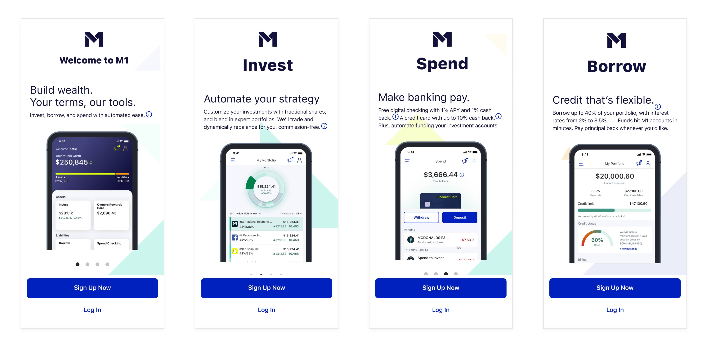
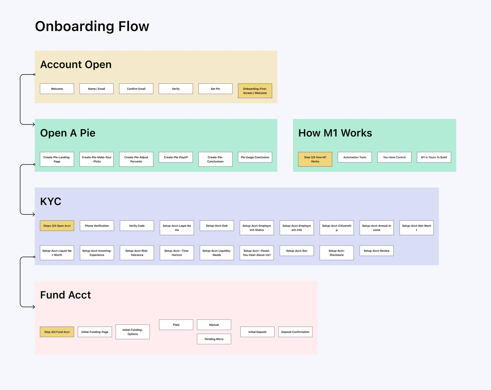
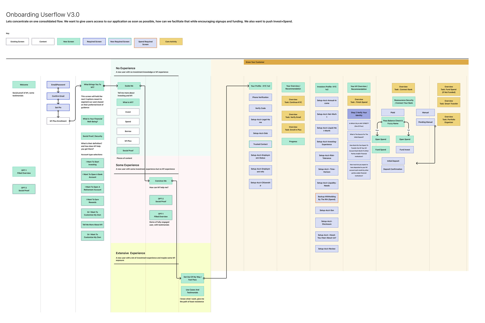
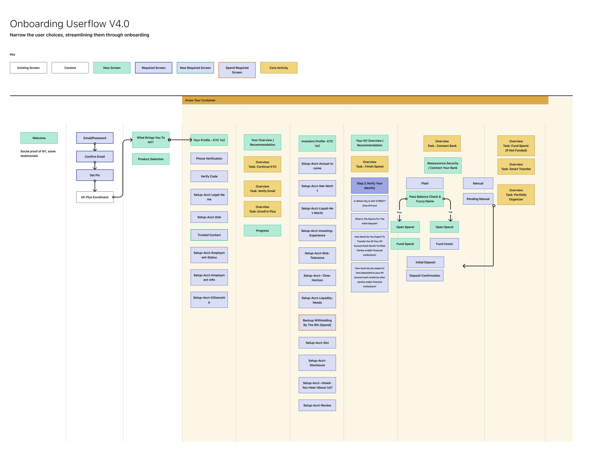
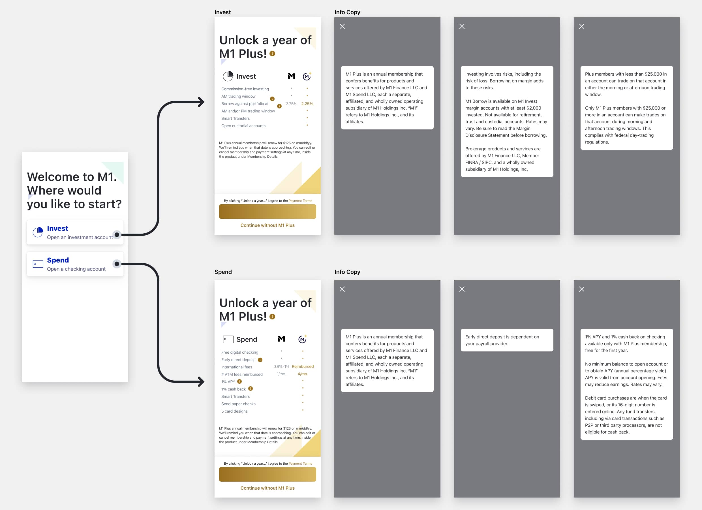
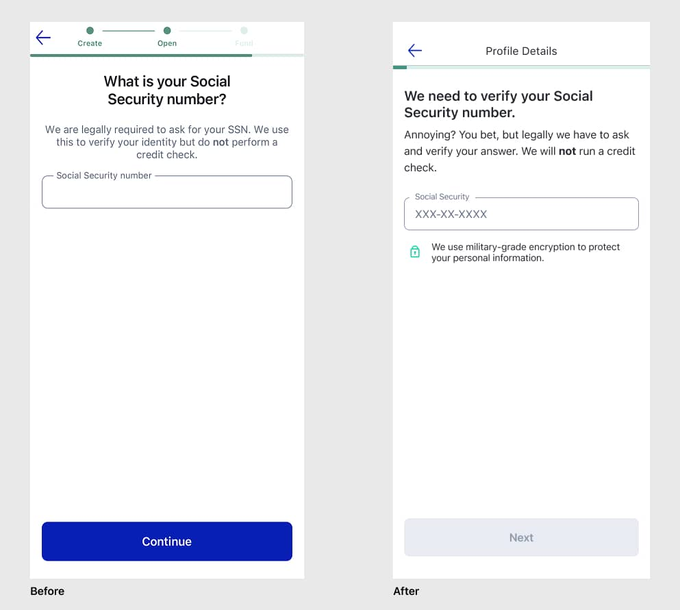
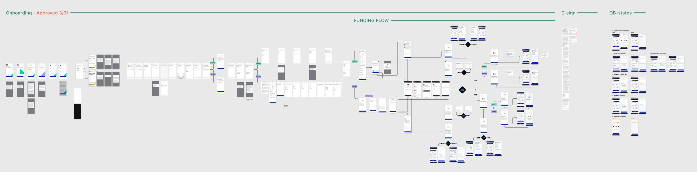

Case study product/m1-onboarding · M1 Finance · Growth
M1 onboarding: following the data
Adventures in onboarding optimization — running experiments, following the data, and bringing more people onto the platform while increasing the number of customers using more than one product.
Like most financial applications, M1's onboarding was built around compliance first and user experience second. The original flow locked new users into signing up for a single product before they saw anything else. The problem: users with multiple products were our most valuable customers — they used the platform more, invested more, and stayed longer. The redesign was an opportunity to fix that while absorbing new regulatory requirements, hitting growth targets, and not breaking the experience for the users who mattered most to the business.

Impact
Outcomes
- +10%increase in overall onboarding conversion
- 50%+premium sign-up conversion, up from 14%
- −2screens removed from the KYC flow
The new flow accommodated multiple product selection at the point of sign-up, and regulatory updates that landed mid-project were absorbed and shipped on schedule.
The problem
One product first, everything else later
The original flow required all new users to open an Invest account first — a product decision made early in the company's history that no longer reflected how users actually engaged with the platform. Users who wanted to add a second product later faced friction: re-entering information, navigating flows that weren't designed for their context, losing momentum.
The fix was straightforward in concept: give users a choice upfront. The compliance requirements around that choice made it significantly more complex. Each account type carried its own KYC path, which meant a decision on screen one cascaded through 18 legally-required screens downstream.

The constraint
Compliance as a design material
KYC requirements in financial services are non-negotiable. Eighteen screens in our flow existed purely to satisfy legal requirements: identity verification, address confirmation, Social Security collection, and more. We had no authority over what questions were asked or the order regulators required them in — and new regulatory updates arrived during the project that had to be absorbed while the redesign was already in progress.
What we could control was everything around those screens: the framing before users entered KYC, the explanations we offered at each step, the way we handled errors, and how we brought users back into the product experience once KYC was complete.

Narrowing the target
The mistake of designing for everyone
Early in the project I made a mistake I see a lot of designers make, including myself before this: I tried to design for everyone. I built flows that would accommodate every possible user type, every edge case, every path through our account types. The result was a sprawling decision tree that didn't do anything well.

The insight that changed the approach came from the data. Roughly 80% of M1's revenue came from the top 20% of users, and that segment skewed toward financially literate people who were already comfortable with investment apps. They weren't looking for a tutorial. They were looking for a fast, confident path to getting their account open and their money moving.
That narrowed our focus significantly. Rather than designing for the user who had never opened a brokerage account before, we optimized for the user who had. That decision shaped every subsequent call on copy, screen count, and information density.

Product selection
A choice upfront, without starting over
We decided to lead with a combined Invest and Spend account option. The complication: Invest and Spend were different account types under the hood, each requiring its own KYC path. A user choosing both effectively needed to complete two compliance flows. The design challenge was building a single, coherent onboarding experience that could accommodate either selection without making the user feel like they were starting over.

The SSN screen
The highest drop-off in the flow
The Social Security number collection screen had the highest drop-off rate in the entire flow. Our first instinct was to address it with trust builders and social proof, on the screen or just before it. We tested that hypothesis and found the opposite was true: any additional screen added friction. Users who had made it that far through KYC didn't need more convincing. They needed to get through it quickly.
What did move the needle was transparency on the screen itself. We added explanatory copy directly on the SSN screen — exactly why we needed the number and how it was used — rather than hiding it behind an info icon. Making the reasoning visible by default reduced hesitation without adding steps.
The core trust builder ended up being speed.
Getting users to that screen faster, with less buildup, performed better than any reassurance we put around it.

Removing friction
Cutting the tutorial, adding a roadmap
The original flow included a “How M1 Works” walkthrough and a tutorial for building your first investment pie, sitting between account creation and the premium upsell moment. Both were well-intentioned — and both were interrupting users who were already sold on the platform, slowing them down with a description of the product they had just signed up for.
We removed both screens. But rather than leaving users with nothing after account creation, I designed a post-onboarding roadmap tracker to replace them. Instead of explaining how M1 works in the abstract, the tracker showed users exactly what to do next to get fully set up: verify your email, connect your bank, make your first deposit — personalized to where they actually were in the process, not a generic product tour.
The distinction matters. The original tutorial assumed users needed convincing. The tracker assumed they were ready to act and gave them a clear path to do it. Repositioning the premium offer — a direct result of removing those screens — combined with the tracker to drive the largest single improvement in the project.
Results
Shipped, measured, absorbed
- Overall onboarding conversion rate increased by 10%.
- Premium sign-up rate increased from 14% to over 50%.
- The new flow successfully accommodated multiple product selection at the point of sign-up.
- Regulatory updates were absorbed mid-project and shipped on schedule.
